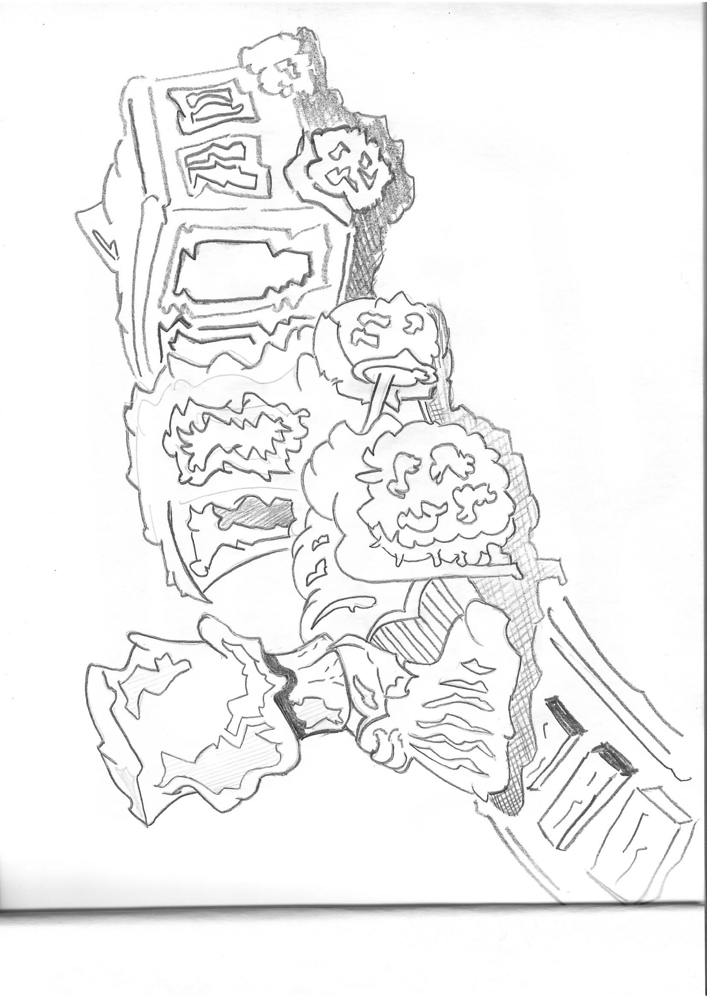
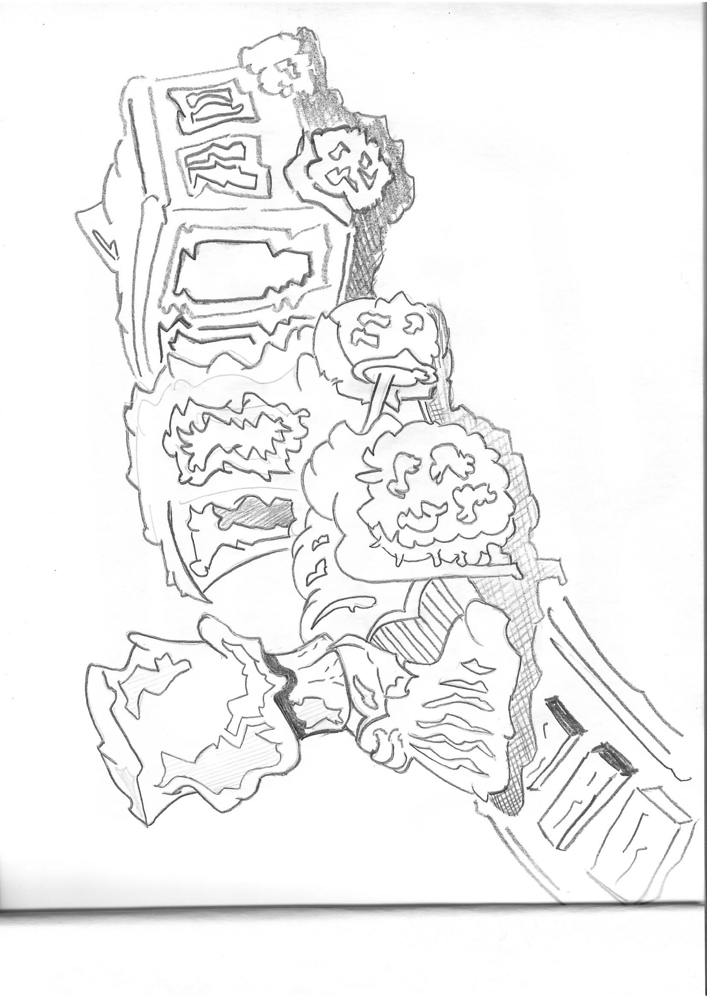

Le mot vesanie est un terme ancien, aujourd'hui désuet, qui désigne : un trouble mental, une aliénation ou une folie. Il vient du latin vesania, qui signifie également "folie" ou "dérèglement de l'esprit". Exemple d'usage : Il fut interné pour cause de vesanie. Ce mot a été utilisé dans le langage médical et psychiatrique aux XVIIIe et XIXe siècles, notamment pour parler des différentes formes de folie avant que des termes plus précis comme "psychose", "névrose", ou "trouble mental" ne s'imposent. Aujourd'hui, on le trouve surtout dans des textes littéraires, historiques ou dans le nom de lieux liés à l’histoire de la psychiatrie (comme peut-être La Vesanerie, si c’est un ancien établissement de soin).
Merci de votre visite et à bientôt pour de nouvelles œuvres !